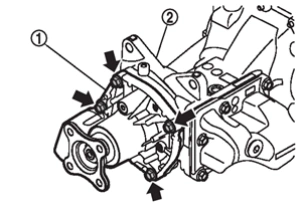
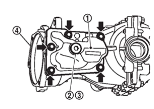
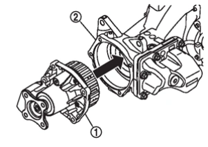
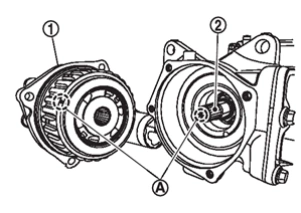
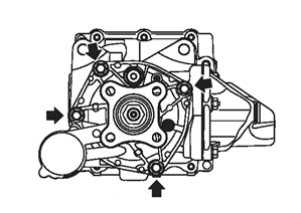
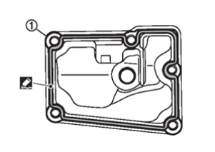
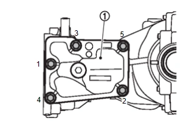

變速箱與傳動系統 - 傳動系統 - 後終減速齒輪：R145 - 單元拆解與組裝 - 電液耦合器
拆解與組裝
N5040306I0003900ENG
拆解
拆下電液耦合器總成
從終減速齒輪總成
在拆下電液耦合器總成安裝螺栓後。

CF100ACWAA00ENG
注意：
拆下時，油液會從電液耦合器總成與終減速齒輪總成之間排出，請在其下方放置油盤。
拆下耦合器油槽蓋
、注油塞
及墊片
從齒輪箱體
，如有必要。

CF100AD3AA00ENG
拆解後執行檢查。請參閱
檢查
.
總成
注意：
作業時請注意零件放置方式，避免汙染物附著於鼓輪表面。
量測並找出主動小齒輪偏擺量最大點。請參閱
調整
.
對合電液耦合器總成
與主動小齒輪花鍵對合，然後安裝至終減速齒輪總成
.

CF100AD6AA00ENG
注意：
對正標記
電液耦合器總成鼓輪上之標記
及標記
主動小齒輪端部上之標記
.

CF100AD7AA00ENG
依對角順序將電液耦合器總成安裝螺栓鎖緊至規定扭力。

CF100AD8AA00ENG
有關鎖緊扭力，請參閱
分解圖
.
將液態密封膠塗於耦合器油槽蓋接合面
.

CF100AD9AA00ENG
有關液態密封膠塗布，請參閱
分解圖
.
注意：
清除安裝面上殘留的舊墊片。並清除安裝面上附著的水分、油液或異物。
密封膠條寬度約為 2.6 mm (0.102 in)。均勻塗布密封膠。
安裝耦合器油槽蓋
至齒輪箱體，並依圖示順序將安裝螺栓鎖緊至規定扭力。

CF100ADAAA00ENG
有關鎖緊扭力，請參閱
分解圖
.
檢查伴隨凸緣偏擺量。請參閱
調整
.
將終減速齒輪總成安裝至車輛後，注入電液耦合器油。請參閱
調整
.
已加入書籤
書籤數量過多。
請刪除後重新加入書籤。
×
 從終減速齒輪總成
從終減速齒輪總成 在拆下電液耦合器總成安裝螺栓後。從終減速齒輪總成在拆下電液耦合器總成安裝螺栓後。、注油塞及墊片
在拆下電液耦合器總成安裝螺栓後。從終減速齒輪總成在拆下電液耦合器總成安裝螺栓後。、注油塞及墊片 從齒輪箱體
從齒輪箱體 ，如有必要。、注油塞及墊片從齒輪箱體，如有必要。從終減速齒輪總成在拆下電液耦合器總成安裝螺栓後。、注油塞及墊片從齒輪箱體，如有必要。
，如有必要。、注油塞及墊片從齒輪箱體，如有必要。從終減速齒輪總成在拆下電液耦合器總成安裝螺栓後。、注油塞及墊片從齒輪箱體，如有必要。 電液耦合器總成鼓輪上之標記
電液耦合器總成鼓輪上之標記){kind=link}
){kind=link}
){kind=link}
){kind=link}
){kind=link}
){kind=link}
){kind=link}